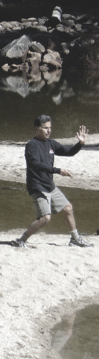
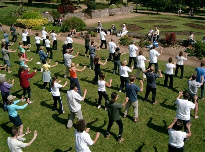

Life is a Moving Experience

From an early age, Wm Guillermo learned the importance of movement from his father, a household mover and his mother, a lover of dance .Since 1975, he has been teaching tai chi ch’uan, movement awareness and conscious dance throughout the United States, Mexico and Europe. His teachers include Anna Halprin, Marshall Ho’o (t'ai chi ch’uan), Mariane Karou (Dance Alive) and Prapto Suryodharmo, Indonesian movement master.
Since 1984, he has conducted summer workshops in Germany where he incorporates elements of movement, ritual and healing.
He has taught movement for children, the elderly, psychiatric patients, at-risk youth and currently with Solar Richmond trainees, a green jobs program which trains residents in construction & solar technology as well as the skills to get and stay employed.
He is currently offering private sessions which integrate curanderismo and movement.
Benefits of Tai Chi
This gentle form of exercise can prevent or ease many ills of aging and could be the perfect activity for the rest of your life.
Tai chi is often described as "meditation in motion," but it might well be called "medication in motion." There is growing evidence that this mind-body practice, which originated in China as a martial art, has value in treating or preventing many health problems. And you can get started even if you aren't in top shape or the best of health.

In this low-impact, slow-motion exercise, you go without pausing through a series of motions named for animal actions — for example, "white crane spreads its wings" — or martial arts moves, such as "box both ears." As you move, you breathe deeply and naturally, focusing your attention — as in some kinds of meditation — on your bodily sensations. Tai chi differs from other types of exercise in several respects. The movements are usually circular and never forced, the muscles are relaxed rather than tensed, the joints are not fully extended or bent, and connective tissues are not stretched. Tai chi can be easily adapted for anyone, from the most fit to people confined to wheelchairs or recovering from surgery."A growing body of carefully conducted research is building a compelling case for tai chi as an adjunct to standard medical treatment for the prevention and rehabilitation of many conditions commonly associated with age," says Peter M. Wayne, assistant professor of medicine at Harvard Medical School and director of the Tai Chi and Mind-Body Research Program at Harvard Medical School's Osher Research Center. An adjunct therapy is one that's used together with primary medical treatments, either to address a disease itself or its primary symptoms, or, more generally, to improve a patient's functioning and quality of life.